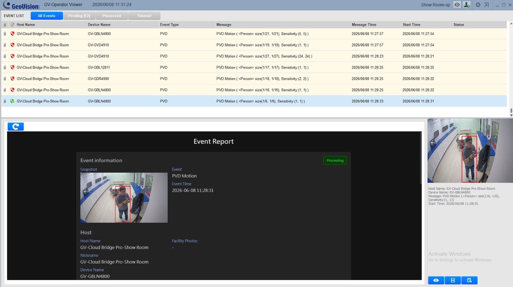
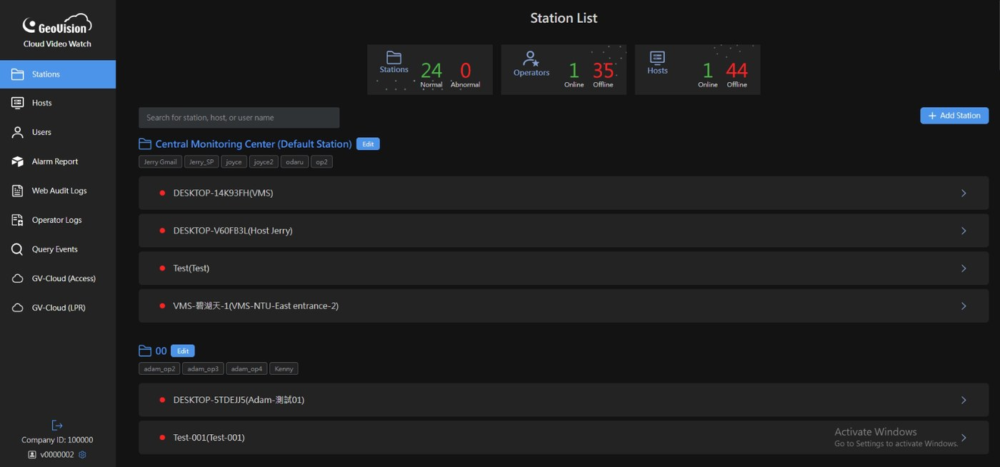
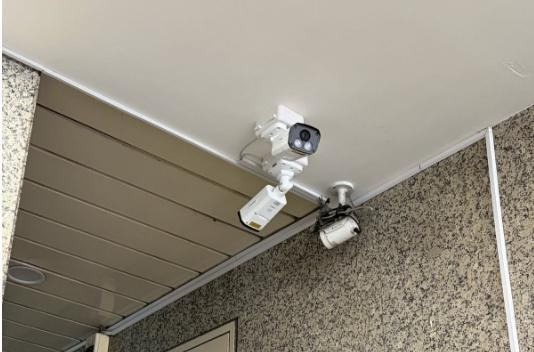
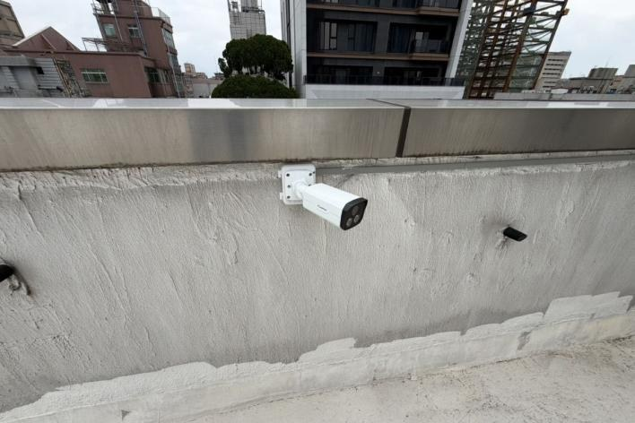
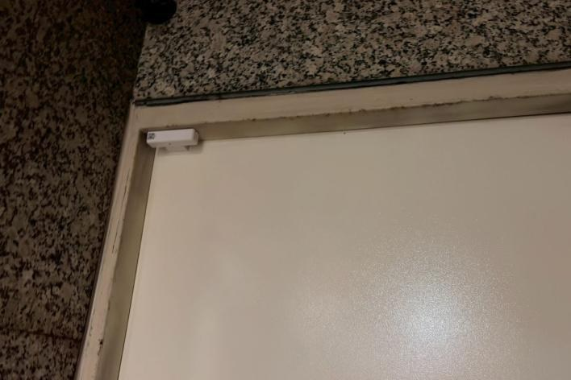
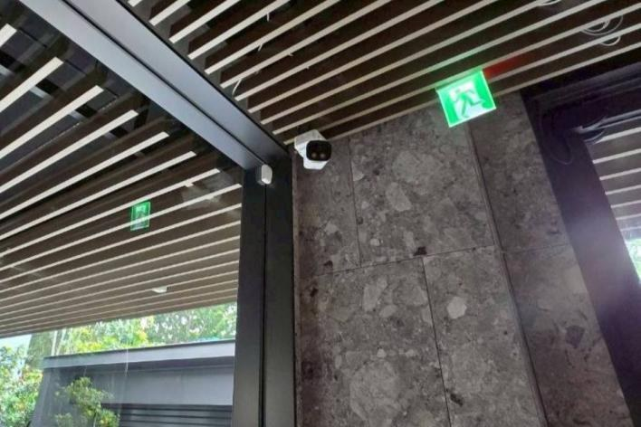
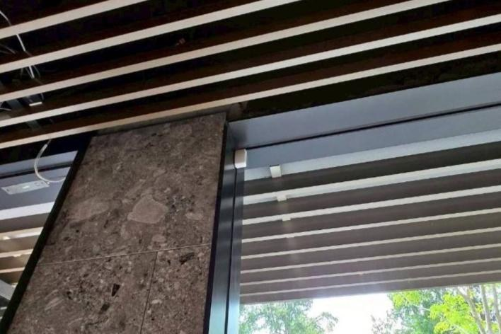
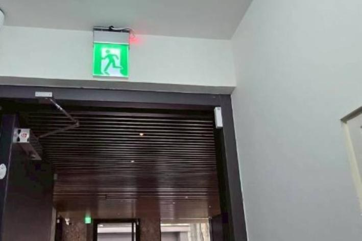

Passive Recording
Video is available, but response often happens after the fact.
GV-Cloud Video Watch
What matters is how quickly it can be verified, documented, and acted upon.
GV-CVW consolidates events from cameras, sensors, and on-site devices, then routes each alert to the right role, action, and notification channel.

The challenge
Cameras record. Sensors trigger. Alerts arrive. But after an event appears, teams still need to verify what happened, decide who should respond, notify the right people, and keep a complete record.
Video is available, but response often happens after the fact.
Sensor events are difficult to verify without related video.
Reports, notifications, and case records are handled across separate tools.
Platform modules
Three connected workspaces help teams manage sites, verify events, and complete incident follow-up without switching between separate tools.

Centralize multi-site management, video playback, AI events, sensor alerts, system health, user access, device settings, event search, and audit logs in one cloud portal.
Support first-line monitoring with live video, instant event alerts, playback review, false alarm filtering, and report submission for further handling.
Review reports, track cases, dispatch response, and send verified event evidence to specific customer groups or security teams.
Event consolidation + workflow management
GV-CVW brings camera events, sensors, and alerts into one platform, then routes each event to the right person, action, and notification channel.
Connect AI cameras, sensors, panic buttons, I/O devices, and third-party alerts.
GV-CB Pro, GV-CB Plus, and GV-VMS bring events into one centralized platform for management.
Events are assigned by task type to operators, supervisors, clients, or response teams.
Send instant alerts with site, event, time, video link, and response instructions.
Use cases
GV-CVW supports organizations that manage events across multiple sites and need faster verification, clearer responsibilities, and complete incident records.
Office Building Security
AI cameras monitor entrances and rooftops, while door sensors and on-site speakers help teams detect abnormal access, verify the event, and notify the right people in real time.



Residential Community Security
Video, glass vibration sensors, door sensors, and audio response work together so operators can verify whether an alert requires customer notification or on-site action.



GV-Cloud Video Watch
Turn every on-site event into verified, documented, and actionable response on one cloud platform.